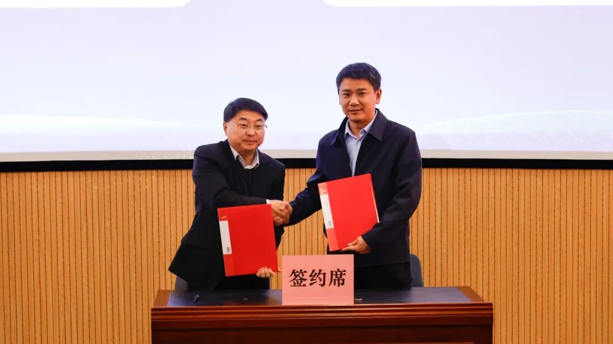
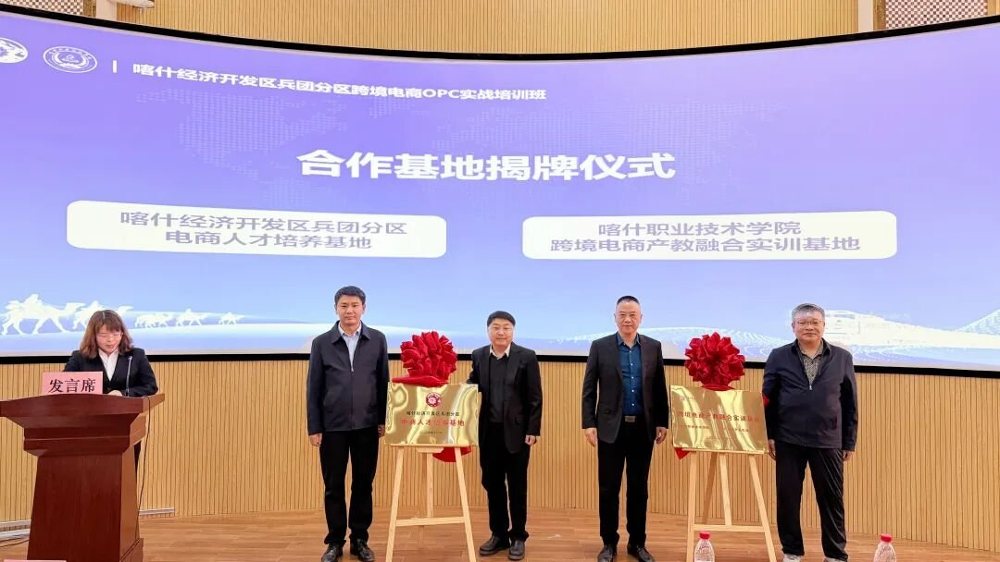
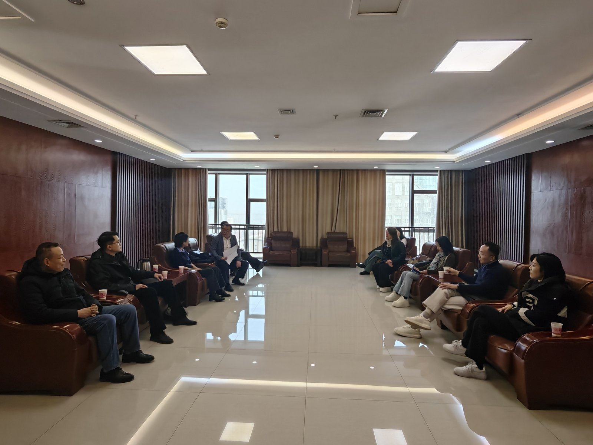
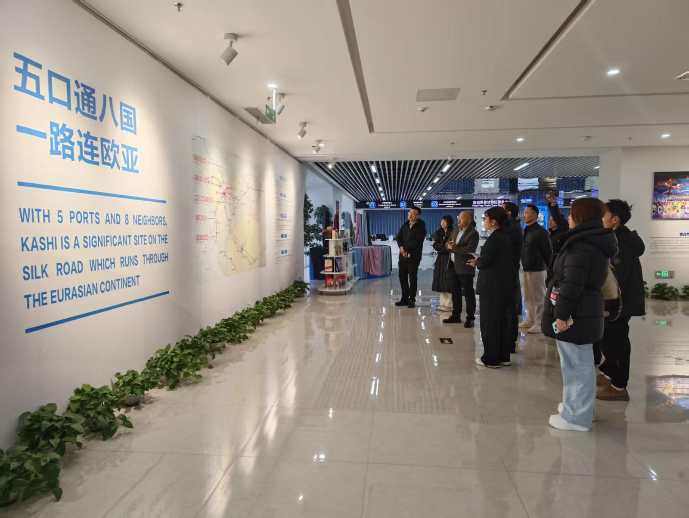

11 月 20 日，兵团分区以"丝路电商·链通中亚"为主题，在自贸试验区三师区块"粤兵智创优品"展示展销中心举行粤兵跨境贸易服务中心招商引资项目集中签约仪式。17 家企业及院校分三批签约，涵盖跨境电商、供应链服务、产教融合等领域。同期，大湾区企业家代表团与兵团分区招商局座谈，实地走访中亚五国馆、喀什保税展示交易中心，把合作意向推向落地项目。
如果说同期举行的两场电商实战班解决的是"人从哪里来"，那么这场签约与招商对接回答的是"产业往哪里去"。人才链与产业链在同一时间窗口对接，构成喀什跨境电商扩容的完整图景。

一、事实层面：17 个项目与一次系统推介
签约分三批进行。兵团分区与东莞市斯乐克电子科技有限公司、国谷控股有限公司、佛山冰火电子商务有限公司、深圳速猫供应链科技有限公司等 14 家企业签订战略合作协议，与图木舒克职业技术学院、喀什职业技术学院、喀什技师学院 3 所院校签署产教融合合作协议。签约企业业务贯穿研发制造、货源组织、平台运营、内容营销、跨境物流仓配等环节。
同场进行的招商推介系统介绍了区位优势、资源禀赋、产业布局、政策体系与营商环境。兵团分区方面表示，喀什是丝绸之路经济带核心区的重要节点和我国向西开放的前沿窗口，兵团分区"四区叠加"优势明显，跨境电商、外贸综合服务、现代物流等新业态加速成长，将为项目提供全生命周期服务。
企业代表的表述更具体。佛山冰火电子商务有限公司创始人、CEO 陈燕明，东莞市斯乐克电子科技有限公司董事长徐作为在发言中围绕跨境电商业务布局、项目建设内容以及面向中亚欧亚市场的发展规划作介绍，表达扎根兵团、拓展市场的信心。
对接不止于会场。签约仪式后设置茶歇交流与参观考察环节，嘉宾实地参观"粤兵智创优品"展示展销中心及粤兵跨境贸易服务中心主体大楼；此前大湾区企业家代表团已走访中亚五国馆、喀什保税展示交易中心。招商推介、企业洽谈与实地考察相互衔接。

二、平台价值：从通道优势到综合优势
喀什的区位优势可以从两个方向理解。向外，它对接中亚、南亚及俄罗斯市场，是向西开放的前沿；向内，它联动粤港澳大湾区的供应链与运营团队。中国（喀什）跨境电子商务综合试验区、新疆自贸试验区喀什片区落地后，兵团分区形成"四区叠加"的政策与平台组合。
兵团分区提出的目标，是推动跨境电商产业由通道优势向"货源、运营、服务、技术"综合优势转变。这一提法点出了通道经济的局限：通关便利和区位只是入口，若缺少本地的货源组织能力、平台运营团队、配套服务与技术支撑，流量难以沉淀为产业。
17 个签约项目的结构恰好回应了这一点。14 家企业覆盖从研发制造到跨境物流仓配的多个环节，3 所院校则承担人才培养职能。项目落地后，兵团分区跨境电商产业的货源组织、平台运营和技术服务能力将同步增强，师市外贸进出口规模有望扩大。

三、意义价值：向西开放的三个结合
其一，东部的产业能力与西部的开放区位结合。大湾区拥有跨境电商的运营经验、供应链资源与成熟服务商，喀什拥有面向中亚的通道与政策平台。签约与考察把两端接起来，使"引进来"的产业资源有了具体的落地空间。
其二，招商引资与产教融合结合。3 所院校签署的产教融合合作协议与 14 家企业的战略合作协议同场落地，意味着产业扩容与人才供给被作为一件事来安排。专业共建、实训基地共享、订单班和现代学徒制等安排，使人才培养与企业用工同步衔接。
其三，平台建设与实战场景结合。中亚五国馆、喀什保税展示交易中心、粤兵智创优品展示展销中心与粤兵跨境贸易服务中心构成从展示、交易到服务的场景组合。企业可以在真实场景里判断市场、验证产品，而不是停留在纸面规划。

四、趋势判断：未来三到五年会发生什么
面向中亚的跨境电商将从通道贸易转向本地化运营。随着展示、保税、物流与服务中心陆续到位，单纯做转口的业务空间收窄，能够在目标市场做选品、内容、仓配与售后的一体化运营者会占据优势。
"四区叠加"的政策优势会加速转化为制度红利。自贸试验区的制度创新与综合试验区的产业配套结合，将在通关便利、税收、跨境结算等方面降低企业成本，吸引更多服务商向喀什集聚。
粤兵协作会从单点项目走向链条化布局。本次签约已覆盖研发制造、货源、运营、营销、物流等多个环节，未来更可能出现以链条为单位整体转移的产业组织方式，而不是零散企业各自落地。
产教融合将成为产业集聚的基础设施。当跨境电商从机会驱动转向能力驱动，稳定的人才供给就决定了产业集群能否持续扩容。院校、企业与服务机构围绕岗位标准共建培养体系，会变成园区招商的标准配置。
结语
17 个项目集中签约，表面看是一次招商成果，深层看是喀什把区位优势转化为产业能力的尝试。向西开放的关键不只是"通"，而是"聚"——把货源、运营、服务、技术和人才聚到一起。签约仪式落幕之后，真正的考验在于这些项目能否跑起来、留下来、长成链条。